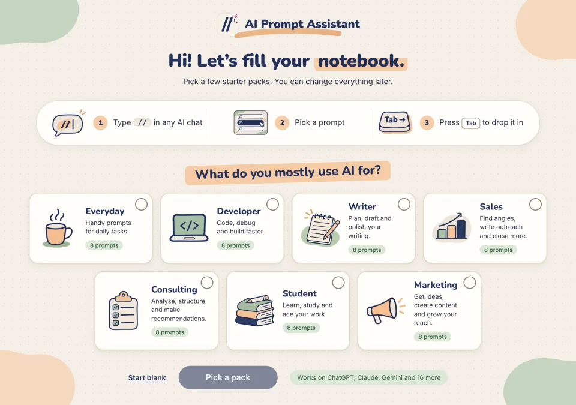
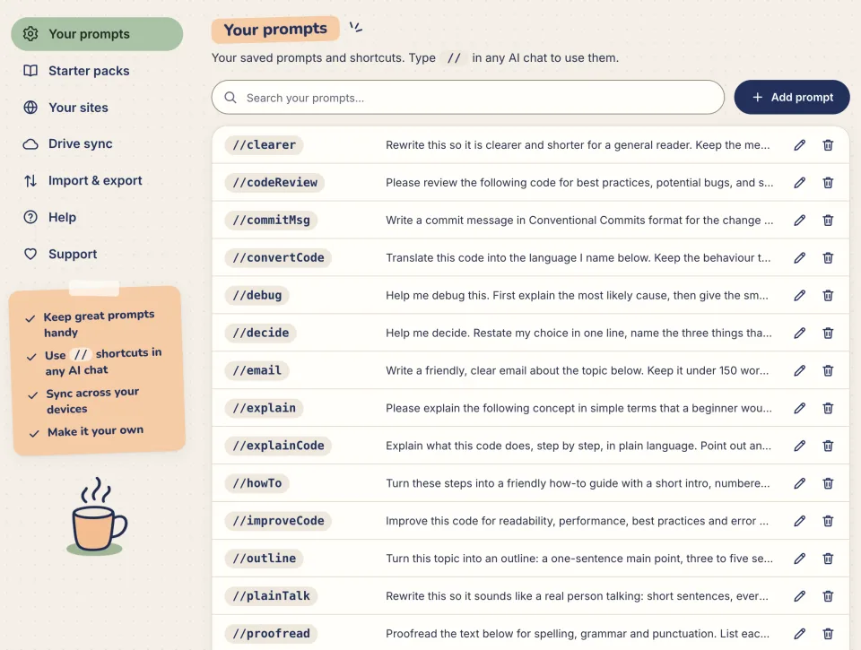
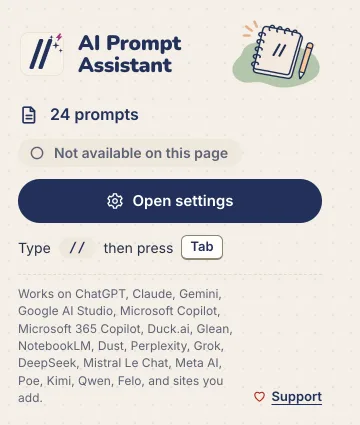
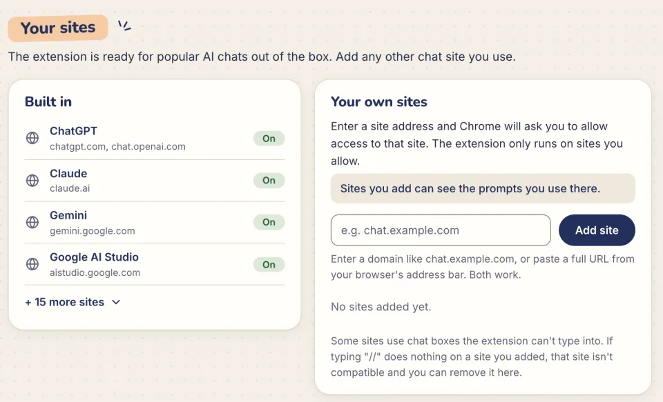

Set up AI Prompt Assistant
A few minutes from install to your first // prompt. This guide is for version 4.0.0.
1. Install
- Open AI Prompt Assistant on the Chrome Web Store and click Add to Chrome.
- Chrome shows what the extension can access: the built-in AI chat sites. Click Add extension.
- A welcome page opens so you can pick some starter prompts (see the next step).
- Optional: click the puzzle-piece icon in Chrome's toolbar and pin AI Prompt Assistant so its button is always one click away.
- Refresh any AI chat tabs that were already open, so the extension can start there.
Updating from version 3.2.2? Version 4.0.0 works on more sites, so Chrome may pause the extension and ask you to accept the new sites. Accept, then refresh your chat tabs. Your prompts are kept.
2. Pick starter packs
The welcome page asks what you mostly use AI for. Each starter pack holds eight short, ready-to-use prompts.
- Tick one or more packs: Everyday, Developer, Writer, Sales, Consulting, Student or Marketing.
- Click the button under the packs. It counts what you picked, such as Add 3 packs. The page then tells you how many prompts were added.
- Or click Start blank to begin with an empty notebook.
You can add more packs later from Starter packs on the settings page. Adding a pack never replaces a shortcut you already have. The Everyday pack includes the five sample prompts from earlier versions, such as //summarize and //codeReview.
Starter pack prompts are adapted from prompts.chat, which is in the public domain (CC0 1.0). They come with the extension, so nothing is downloaded.

3. Add your own prompt
- Click the extension's button in the toolbar, then Open settings (or Settings at the bottom).
- Under Your prompts, click Add prompt.
- Type a Shortcut, such as
meetingNotes. Shortcuts can't contain spaces. - Type the Prompt itself, for example: “Turn these notes into a short summary with action items and owners:”
- Click Save prompt. It now works on every supported site.
To change or remove a prompt, use the pencil or bin button next to it. The search box finds any prompt. With a long list, settings shows 20 prompts at a time; click Show more to see the next ones.
Pick shortcuts you'll remember. //reviseEnglish is easier to find later than //r1. A shared start such as work_ or study_ keeps related prompts together in the menu.

4. Use it in a chat
- Open a supported chat site and click in the message box.
- Type //. The menu lists your prompts.
- Keep typing to narrow it down: //rev shows every shortcut with “rev” in it.
- Press Tab, or click a prompt, to insert it. Then add your own text and send.
| Key | What it does |
|---|---|
| // | Open the menu with all your prompts |
| ↑ ↓ | Move through the list |
| Tab | Insert the highlighted prompt (recommended) |
| Enter | Also inserts, but on some sites Enter sends the message instead |
| Esc | Close the menu |
The menu is drawn in its own extension frame, so the chat site can't read or search the prompts listed in it. It matches the site's light or dark look.
The toolbar button
Click the extension's button in Chrome's toolbar to see how many prompts you have and whether the extension is on for the page you're looking at:
- Active on the site: type // and go.
- Reload to start: the site is supported, but the tab was open before the extension started. Click Reload this tab.
- Not active on a site that isn't built in: click Turn on for this site to add it.
- Not available on this page: pages such as Chrome's own settings, where extensions can't run.
It only looks at the current tab when you click the button, and only to show this status.

Add your own sites
Use your prompts on chat sites that aren't built in, such as an AI tool your company runs.
The quick way
- Open the chat site and click the extension's toolbar button.
- Click Turn on for this site. Settings opens at Your sites with the site's address already filled in.
- Click Add site. Chrome asks whether to allow access to that one site. Choose Allow.
- Reload the chat tab, then type // in its message box.
Or type the address
On the settings page, under Your sites, type the site's domain, such as chat.example.com, or paste a full URL from the address bar. Then click Add site and allow access. A domain without https:// also covers its www. address.

- The extension runs only on the sites you allow. Click Remove next to a site to stop it running there; that also gives back its access.
- If you take away a site's access in Chrome's own menu, it shows Access needed. Click Allow Access to turn it back on.
- A site you added that later became built in shows Now built in. It keeps working either way.
- Some sites use message boxes the extension can't type into. If // does nothing on a site you added, remove it.
Sites you add can see the prompts you use there. Before you add a site, read what a site can see.
Coming next: your sites in Google Drive. In 4.0.0, Google Drive backup carries your prompts but not your list of added sites. Add your sites again on each computer for now.
Google Drive backup and sync
Your prompts live in this browser only. Chrome's own sync doesn't copy them to your other computers. To back them up, or to use them on another computer, save them to your Google Drive. This is optional.
Back up your prompts
- On the settings page, open Drive sync and click Connect to Google Drive.
- Google asks you to allow access. The extension asks only for files it creates itself; it can't see anything else in your Drive.
- Click Upload to Drive. Your prompts are saved to
ai-prompt-assistant-prompts.jsonin My Drive. - After you change your prompts, click Upload to Drive again. Backups don't run on their own.
Load them on another computer
- Install the extension there and open its settings page.
- Click Connect to Google Drive with the same Google account.
- Click Download from Drive. Prompts from Drive are added to the ones already there. If a shortcut exists in both places, you're asked before it's replaced.
If you upload after changing prompts in two places, the extension shows Your prompts changed in two places so you can choose which version of each prompt to keep.
Disconnect removes the extension's access to your Drive and keeps your prompts in the browser. The backup file stays in your Drive until you delete it.
Drive backup needs Google Chrome. Chrome handles the Google sign-in. If you use another Chromium browser, use Export & import instead.
Export & import
- Export prompts (to file), under Import & export in settings, downloads all your prompts as one JSON file. Keep it as a backup or share it with your team.
- Import prompts (from file) adds the prompts from a file. If a shortcut already exists, you're asked before it's replaced.
Support the project
AI Prompt Assistant is free and made by one person. If it saves you time, you can buy a coffee on Ko-fi.
- Click Support in the settings menu, or the heart Support link at the bottom of the toolbar popup.
- A window shows a preview of the Ko-fi page. The preview is view-only; click Open Ko-fi to open the real page in a new tab.
- Close the window with Esc, its close button, or a click outside it.
Supporting is entirely optional. Every feature works the same without it.